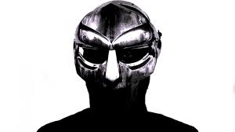

Alternative hip-hop encompasses any rap music that does not conform to any of the mainstream styles of rap.
It fuses styles from several genres outside of hip-hop to create its own unique style. Below are some artists
that are defined as alternative hip-hop.
MF Doom

Daniel Dumile AKA MF Doom is an alternative rapper from Long Island, New York. He is most well known for his supervillain persona and incredible rhyming ability. He often collaborates with other artists such as Madlib and Bishop Nehru to create his albums. He often uses comic book references and samples within his music. Many artists have stated that MF Doom has been a large influence of them, despite not gaining any mainstream success or hits.
Atmosphere
Atmosphere is an alternative rap duo from Minneapolis, Minnesota consisting of Slug, the rapper, and Ant, the producer. What makes Atmosphere unique is their lyrical content. Many of their songs talk about relationships in a way that is more common in alternative and indie music. Their songs are much more introspective than most rap music. Their music is more about lyrical content and less about beats or flow.
Aesop Rock
Ian Bavitz AKA Aesop rock is an alternative rapper from Portland, Oregon. He has been arguably the most popular truly alternative rapper dating back to the earl 2000's. He is most known for having very complex lyrics. He often uses a lot of figurative language that requires multiple listens to fully unpack and understand. This use of figurative language is what often draws fans in but has also been criticized for being to difficult to fully enjoy or understand. Regardless, Aesop's abstract lyrics have gained him plenty of mainstream attention and success.